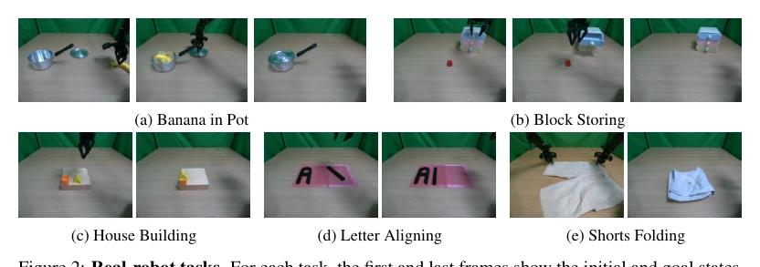
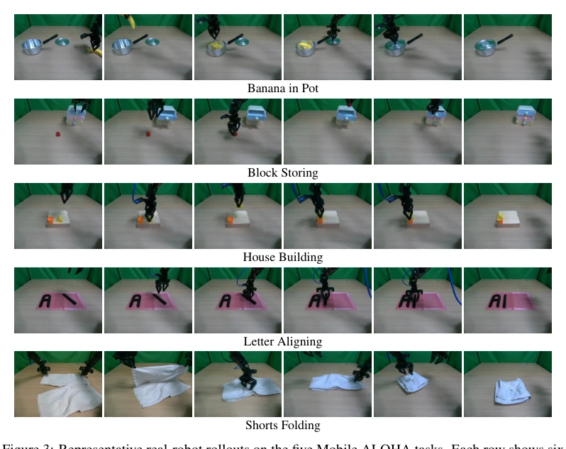
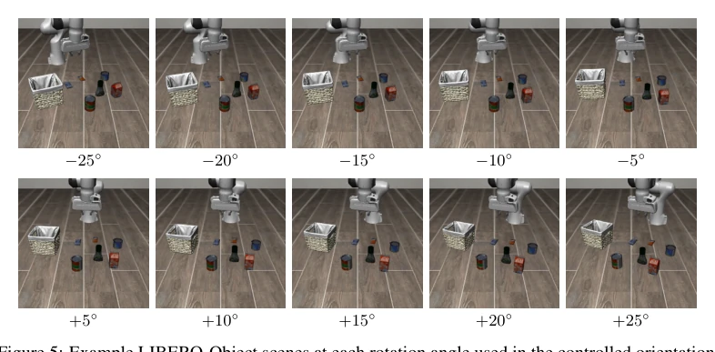

EquiVLA: A General Framework for Rotationally Equivariant Vision-Language-Action Models
Thien-Loc Ha, Quang-Tan Nguyen, Trong-Bao Ho, Long Dinh, Minh Duc Nguyen, Gia-Binh Nguyen abspdf
论文点评Review
VLA 模型终于学会转圈了？EquiVLA 给大模型塞了个几何偏置，不用重训 VLM 就能搞定旋转泛化。亮点是模块化，EQUIPERCEPTOR 在 ViT 上做 Token 级帧平均，EQUIACTOR 搞个等变 DiT。但代价也不小，推理延迟翻倍，8 次 ViT 前向。而且动作头得从头训，预训练权重白扔了。算是给 VLA 加了个“防抖”滤镜，但滤镜有点厚。对于只关心旋转的桌面任务很香，但要是搞 3D 操作，SO(2) 就有点不够看了。这工作证明了几何偏置在 VLA 里是可行的，但计算开销和训练成本是硬伤，适合算力富余且对旋转敏感的场景。不过，既然能提升 14% 的成功率，这“厚滤镜”也算物有所值，毕竟数据效率才是王道。
Have VLA models finally learned to spin? EquiVLA incorporates a geometric bias into large models, achieving rotation generalization without retraining the VLM. The highlight is modularity: EQUIPERCEPTOR performs Token-level Frame Averaging on ViT, while EQUIACTOR employs an equivariant DiT. However, the cost is significant: inference latency doubles, requiring 8 ViT forward passes. Moreover, the action head must be trained from scratch, wasting pre-trained weights. It counts as adding a "stabilization" filter to VLA, but the filter is a bit thick. It is very appealing for desktop tasks concerned only with rotation, but for 3D manipulation, SO(2) is somewhat insufficient. This work proves geometric bias is feasible in VLA, but computational overhead and training costs are significant drawbacks, suitable for scenarios with abundant compute and rotation sensitivity. However, since it can improve success rate by 14%, this "thick filter" is considered worth the cost, after all, data efficiency is paramount.
Existing VLA lacks geometric inductive bias; strategies fail after object rotation, requiring massive data to relearn. [1] is strong but lacks rotation awareness. Existing equivariant methods like Eq.Bot [10] use normalization wrapping, Eqibot [6] needs training from scratch, unable to utilize pre-trained VLM. [5] etc. target only small models. An end-to-end framework is needed. This leads to poor performance during deployment when facing unseen object orientations; massive rotation data must be collected to generalize, which is costly. Therefore, embedding geometric structure directly into the architecture becomes key, rather than relying on data augmentation.
方法Method
框架分两模块。EQUIPERCEPTOR 对冻结 ViT 做 Token 级 Frame Averaging，空间置换 + 特征旋转，生成等变 token。EQUIACTOR 替换 DiT 头，用可导向层（steerable layers）实现 SO(2) 等变注意力与解码。数据流：图像->ViT->FA->Adapter->EQUIACTOR->Action。具体而言，EQUIPERCEPTOR 通过 Token 级帧平均，将旋转后的 ViT 特征映射回原网格，保留空间结构的同时引入等变性。EQUIACTOR 则完全重写了 DiT 头，所有线性投影和注意力机制均改为等变形式，确保动作输出随输入旋转而旋转。两者结合，实现了从视觉到动作的端到端等变链，且无需修改 VLM 权重。
The framework is divided into two modules. EQUIPERCEPTOR performs Token-level Frame Averaging on frozen ViT, spatial permutation + feature rotation, generating equivariant tokens. EQUIACTOR replaces the DiT head, using steerable layers to implement SO(2) equivariant attention and decoding. Data flow: Image->ViT->FA->Adapter->EQUIACTOR->Action. Specifically, EQUIPERCEPTOR maps rotated ViT features back to the original grid via Token-level Frame Averaging, introducing equivariance while preserving spatial structure. EQUIACTOR completely rewrites the DiT head; all linear projections and attention mechanisms are changed to equivariant forms, ensuring action outputs rotate with input rotation. Combined, they achieve an end-to-end equivariant chain from vision to action, without modifying VLM weights.
实验Experiments
LIBERO 成功率 92.6% vs 78.1%。CALVIN 序列长度 4.03。Mobile ALOHA 真实任务 72% vs 54%。消融显示 C8 组最佳。数据效率提升，10% 数据下优势明显。在 LIBERO 基准上，相对控制下提升显著，绝对控制下也有进步。CALVIN 任务中，序列长度增加意味着更长的任务规划能力。真实机器人实验验证了仿真到真实的迁移效果，尤其在需要旋转对齐的任务中提升巨大。消融实验表明，C8 对称群在精度和延迟间取得最佳平衡，而数据效率分析证实了等变偏置在少样本场景下的核心价值。
LIBERO success rate 92.6% vs 78.1%. CALVIN sequence length 4.03. Mobile ALOHA real task 72% vs 54%. Ablation shows C8 group is best. Data efficiency improved, advantage obvious under 10% data. On LIBERO benchmark, improvement significant under relative control, also progress under absolute control. In CALVIN tasks, increased sequence length means longer task planning capability. Real robot experiments validate sim-to-real transfer effects, especially huge improvement in tasks requiring rotation alignment. Ablation experiments show C8 symmetry group achieves best balance between accuracy and latency, while data efficiency analysis confirms core value of equivariant bias in few-shot scenarios.
其他图片Other Figures

Figure 2: Real-robot tasks. For each task, the first and last frames show the initial and goal states, respectively. See Appendix A for full task descriptions.

Figure 3: Representative real-robot rollouts on the five Mobile ALOHA tasks. Each row shows six keyframes from initialization to task completion. The figures illustrate the diversity of manipulation skills evaluated in our real-world benchmark, including object placement, drawer interaction, precise

Figure 5: Example LIBERO-Object scenes at each rotation angle used in the controlled orientation- shift experiment. Row 1: negative rotations (−25◦to −5◦); Row 2: positive rotations (+5◦to +25◦). Object positions and end-effector pose are rotated while camera views remain unchanged.